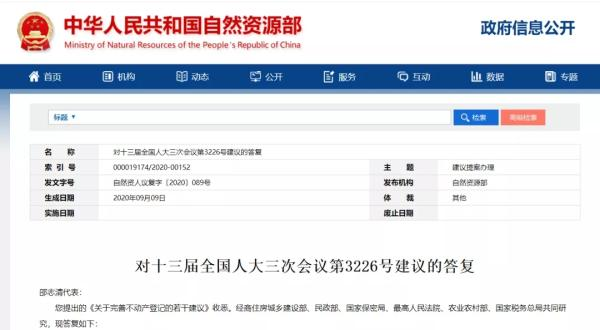

中国侨网10月30日电 题：农村宅基地使用权可依法由城镇户籍子女继承！华侨华人可以吗？
最近，关于农村宅基地使用权可以依法由城镇户籍子女继承并办理不动产登记话题，引起热议。

自然资源部经商住房城乡建设部、民政部、国家保密局、最高人民法院、农业农村部、国家税务总局对“十三届全国人大三次会议第3226号建议”作出答复，明确农民的宅基地使用权可以依法由城镇户籍的子女继承并办理不动产登记。
根据《继承法》规定，被继承人的房屋作为其遗产由继承人继承，按照房地一体原则，继承人继承取得房屋所有权和宅基地使用权，农村宅基地不能被单独继承。《不动产登记操作规范(试行)》明确规定，非本农村集体经济组织成员(含城镇居民)，因继承房屋占用宅基地的，可按相关规定办理确权登记，在不动产登记簿及证书附记栏注记“该权利人为本农民集体经济组织原成员住宅的合法继承人”。
那么，该答复所涉及的问题是否适用于华侨华人？
对此，记者采访了国务院侨办法律顾问、中国侨联法律顾问委员会委员、北京市大道政通律师事务所主任许东耕律师。
许律师认为，从法理上讲，海外华侨华人对在农村的合法房产遗产包括宅基地土地使用权应当有权继承。
他表示，“明确农民的宅基地使用权可以依法由城镇户籍的子女继承并办理不动产登记”这一答复应该说是国家层面的，是中央政府的职能部门经商住房城乡建设部、民政部、国家保密局、最高人民法院、农业农村部、国家税务总局共同研究、作出的答复。这一答复也体现了9月29日全国深化农村宅基地制度改革试点电视电话会议精神，填补了我国法律在宅基地使用权继承上的空白。
他认为，这一答复虽然针对的是国内城镇户籍子女继承农村宅基地使用权问题，但其核心价值在于，突破了农村宅基地登记中原来的唯身份论的观点和做法。这一答复所体现出的原则和精神，应该涵盖和适用华侨华人。
律师小课堂：
在中国，土地法律制度具有独特性，土地的权利归属是所有权和使用权分离而立，土地使用权是依法设立的用益物权。
从所有权角度而言，根据我国土地制度的基本框架和基础，就房产所涉及的土地，一般而言，城市的土地属于国家所有，农村土地属于集体所有。土地使用权是依法确认的用益物权，也就是经过依法确权的土地使用权，权利人可以依法“占有、使用、处分、收益”。可以说，土地使用权所具有的权利属性，在我国相当于物权，具有物权法意义上的完整性。
在农村，宅基地是基于农村集体经济组织成员的身份而产生的，可以在本集体组织内部进行转让，交易具有封闭性。这是为了防止耕地被侵占，影响到粮食生产安全。
随着社会发展，农村年轻人通过上学、当兵、招工、经商、乃至出国等途径走出乡村，为安家落户，已经把户口迁移到城市，甚至移民海外。把户口迁走了，这意味着老家的宅基地使用权就不能继承。对海外华侨华人而言，在祖籍地的房产，由于身份变化，也会导致在权利保护上出现诸多问题。
对此，党的十八大以来，制度上已经予以顶层设计，以城乡统筹发展为导向，包括在户籍制度、土地管理制度等方面，在立法上均有所突破。自2015年启动农村“三块地”改革试点以来，在土地征收制度和集体经营性建设用地入市两个改革领域取得了一批可复制、可推广、利修法的制度创新成果，并在新《土地管理法》中得到总结和吸收。
9月29日，全国深化农村宅基地制度改革试点电视电话会议强调，要坚持稳中求进工作总基调，保持足够的历史耐心，周密谋划、有序实施，稳慎做好深化农村宅基地制度改革试点各项工作。这为今后的宅基地改革试点工作进一步明晰了方向。
(文字整理：马秀秀；ID：qiaowangzhongguo)